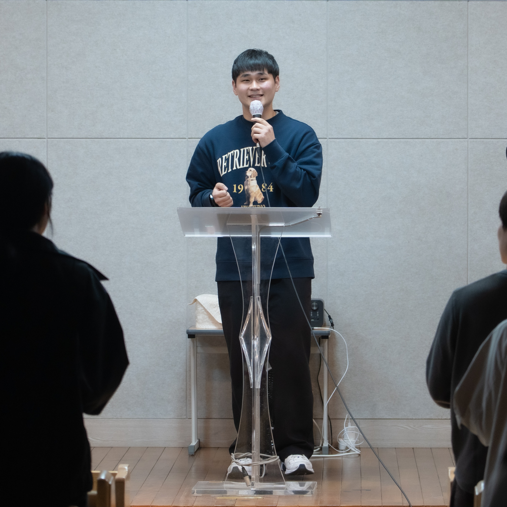

2026.06.30- 07.14

부산대 CCC
고성교회 청년부 / 장전중앙교회 엘림
새 노래로 여호와께 노래하라 온 땅이여 여호와께 노래할지어다 여호와께 노래하여 그의 이름을 송축하며 그의 구원을 날마다 전파할지어다
샬롬! 주님의 이름으로 문안드립니다. 저는 부산대학교 CCC에서 훈련받고 있는 조우림 순장입니다. 저는 올해 여름에 일본 고베로 예수 그리스도의 복음을 전하기 위해 단기선교를 가게 되었습니다. 하나님께서 고베에서 크신 일을 행하실 주님을 경험하길 기대합니다.
일본은 인구 1억 2천만 명 가운데 그리스도인이 1%에도 미치지 않는 대표적인 미전도 국가입니다. 오랜 민속 신앙과 종교 문화 속에서 복음이 깊이 뿌리내리기 어려운 영적 환경 가운데 있으며 교회의 고령화와 다음 세대 단절 또한 심각한 상황입니다. 고베 역시 과거 복음의 통로였지만 현재는 복음에 대한 관심이 많이 낮아졌습니다. 겉으로는 안정되어 보이지만, 많은 일본 청년들이 깊은 외로움과 공허함 속에서 살아가고 있으며 오직 복음만이 그들의 삶을 회복시킬 수 있습니다. 일본의 영적 회복을 위한 기도가 절실히 필요합니다 그래서 저희 선교팀에서는 캠퍼스 선교와 찬양사역 등을 통해 단기선교를 진행 할 예정입니다.
올해 단기선교는 찬양사역 중심으로 진행된다는 이야기를 들고 큰 기대함으로 선교를 위해 기도하게 되었습니다. 특히 부산지구 CCC 찬양팀 홀리 라이프와 함께 마음을 모아 선교를 준비하며, 하나님께서 일본을 향한 마음과 소망을 품게 하셨습니다. 저는 하나님께서 제게 주신 달란트인 찬양을 통해 일본 땅에 복음을 전하고, 복음의 씨앗을 심는 일에 쓰임받기를 소망하고 있습니다.
이번 선교는 특별히 음악을 통해 하나님이 낯선 일본 땅 가운데 하나님의 사랑이 전해지고, 사람들의 마음이 열리 기를 기도하고 있습니다. 또한 이번 선교를 통해 저를 향한 하나님의 비전과 부르심을 더욱 깊이 발견하게 되기를 소망합니다. 이 복음의 여정에 기도와 후원으로 함께해 주시기를 부탁드립니다.
• 농협 352-2244-9825-83 조우림
• 카카오뱅크 3333-19-0302710 조우림
∙ 연락처: 010-4248-7550
일정을 위한 항공권, 숙소, 보험 및 사역비로 총 190만원의 선교비가 필요합니다.